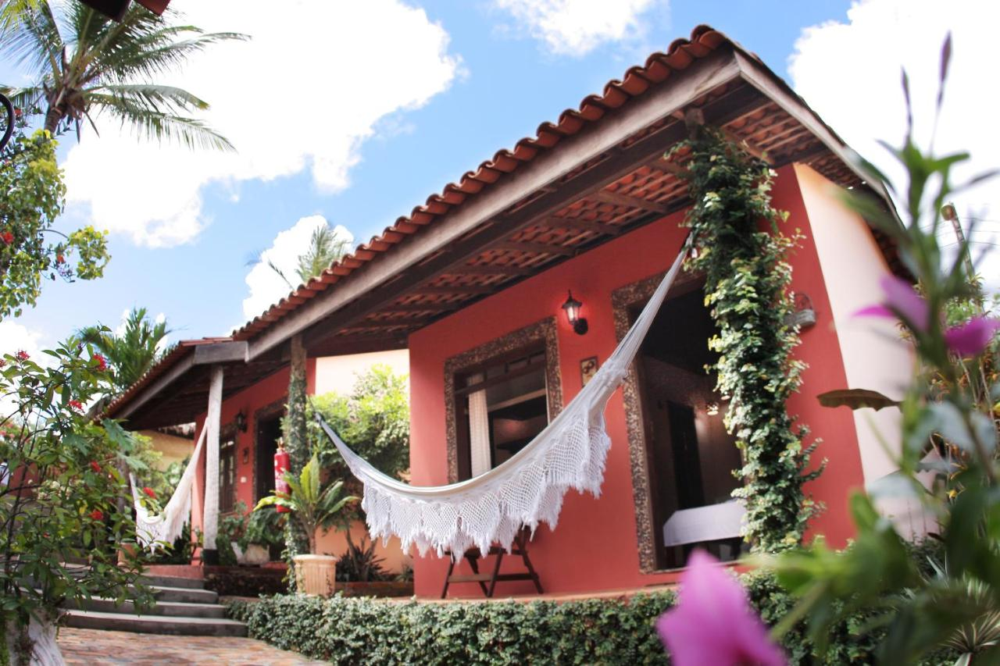
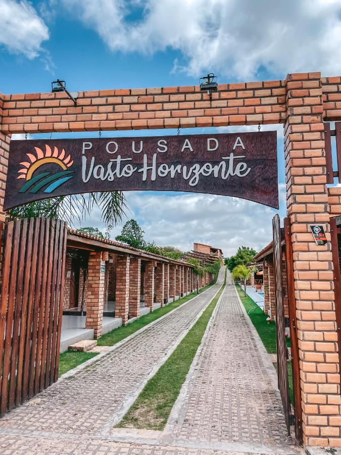
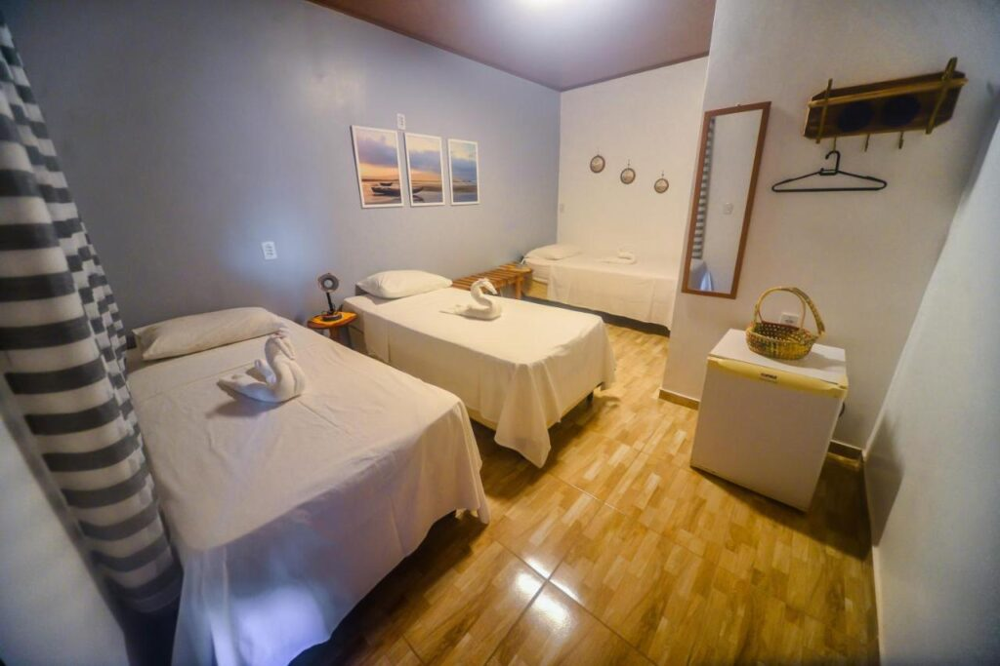

Pousadas e Hotéis
Algumas Pousadas
Encantes do Nordeste
Vasto Horizonte
São José

1 | Entre as 10 pousadas em Barreirinhas, Atins e Santo Amaro, o hotel Encantos fica em Barreirinhas e dispõe de chalés com um estilo bem rústico.
Por lá, você ainda pode encontrar 2 piscinas, bar e possibilidade de conhecer a paisagem em um passeio de 4x4, barco ou trilhas.
Em relação à localização, o Encantes fica a menos de 200 metros do excelente Restaurante Bambaê, além de oferecer serviço de transfer
para a Praia de Jericoacoara e para São Luís.
2 | Entre as opções de pousadas em Barreirinhas, a Pousada Vasto Horizonte é a escolha perfeita para quem procura boa opção de acomodação,
restaurante próprio e ambiente propício para esportes aquáticos com excelente piscina e bar à disposição.
Ela fica a menos de 4 km da balsa, 2,9 km da Casa do Artesanato de Barreirinhas e a 8 km da Igrejinha.
3 | Com uma localização privilegiada, bem no centro de Barreirinhas, a Pousada São José tem seus quartos todos decorados com ornamentos feitos por artesãos regionais, excelente café da manhã e fica a 400 metros do Rio Preguiça. Ela é uma das melhores opções de pousadas nos Lençois Maranhenses com localização privilegiada do centro da cidade e com acomodações muito bem avaliadas.